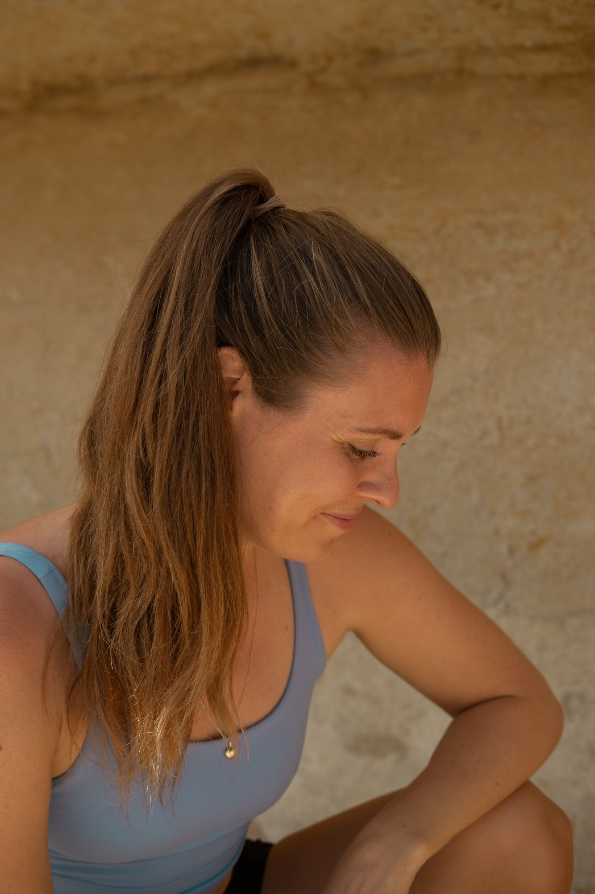

Återställ balans. Hitta lugn.
Energibehandlingar genom Reiki och ljudterapi som stödjer nervsystemets reglering, djup avslappning och ett övergripande välmående.
Din kropp är komplex. Ibland räcker rörelse, styrketräning och neurovetenskap för att återställa balans.
Ibland räcker det inte.
Du kanske har återfått din fysiska förmåga att röra dig, men ändå känna att något håller dig tillbaka. Stress, rädsla, svåra livserfarenheter eller djupt rotade tankemönster kan ibland fortsätta påverka hur du upplever din kropp, även när allt annat verkar redo att gå vidare.
Det är där Reiki och ljudterapi kan erbjuda ytterligare ett lager av stöd.
Medan styrketräning verkar genom rörelse och neuroträning genom nervsystemet, är dessa behandlingar tänkta att komplettera de metoderna genom att skapa utrymme att utforska de känslomässiga, mentala och energimässiga mönster som också kan vara en del av din upplevelse.
För läkning sker inte alltid genom handling. Ibland börjar den med att skapa förutsättningarna där förändring känns trygg.
Vad händer under en behandling?
Du tillbringar omkring 60 minuter i skön vila på en behandlingsbänk medan du helt enkelt låter dig själv ta emot.
Beroende på vad du föredrar innehåller sessionen Reiki eller ljudterapi med stämgafflar.
Många använder dessa sessioner för att stödja avslappning, bearbeta känslomässiga upplevelser, återknyta kontakten med sig själva eller utforska djupare mönster som de känner kan påverka hur de tar sig fram i livet.
Ditt enda jobb är att slappna av. Mitt är att skapa ett lugnt, stödjande utrymme där du kan sakta ner, återknyta kontakten och lyssna på vad din kropp kan vara redo att visa dig. Varje session är olik eftersom varje person är olik.
Om det här känns rätt för dig …
Alla känner inte att det här sättet att arbeta passar dem — och det är okej.
Men om du känner att din läkningsresa handlar om mer än bara rörelse, erbjuder dessa behandlingar ytterligare en väg av utforskning och stöd.
Ibland börjar den största förändringen inte genom att göra mer … utan genom att låta dig själv ta emot.